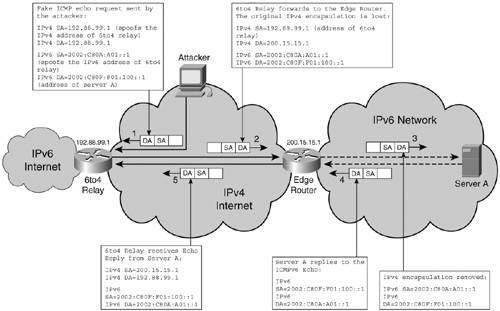

Security Threats and Best Practices to Protect Against ThemThe relatively small-sized IPv6 deployments of past years did not render them uninteresting to hackers. Attacks surfaced shortly after IPv6 was deployed, based on concepts previously used with IPv4 or taking advantage of IPv6-specific vulnerabilities. It is therefore reasonable to relate the IPv6 security threats to IPv4 and group them into two categories: threats with new considerations in IPv6, and threats with similar behavior in IPv4 and IPv6. This classification is reflected in the recommended security best practices for mitigating these threats. Some recommendations are extrapolations of their IPv4 counterparts, whereas others are completely new and specific to IPv6. Threats with New Considerations in IPv6IPv6-specific features can make some common attacks more difficult while opening new vulnerabilities. This section analyzes those threats that have to adapt to these features as well as new threats that can impact exclusively IPv6. ReconnaissanceReconnaissance is not necessarily an attack, because it will most likely not impact negatively the network or the users. However, it typically is the precursor of an attack and it is intended to provide the attacker with information about the victim. CharacteristicsThe common IPv4 practice of ping sweeps is not an option anymore with IPv6. It would take years to scan 264 hosts on a typical network of length /64 even if it is done at high rates, rates that would most likely trigger security alarms. For this reason, Network Mapper (Nmap), a tool commonly used in IPv4 to identify active hosts, does not even support IPv6 ping sweeps. With IPv6, other mechanisms must be used for reconnaissance purposes:
The larger network addresses can potentially pose challenges to the propagation of Internet worms from one prefix to another because it is more difficult to identify active hosts on a prefix other than that of the infected host. Locally, an infected host can send a ping to the all-nodes multicast address to find active hosts within its own prefix. Best PracticesThe recommended best practices deal with each aspect of reconnaissance discussed in the preceding section:
Unauthorized AccessTo be able to exploit the vulnerabilities of hosts and servers, attackers must first reach them through IP. A host's ability to communicate implies IP accessibility. The most a network administrator can do to protect the hosts is to control some of the means that an attacker can use to covertly reach them. Network elements and devices can be used to filter traffic types identified as possibly supporting attacks. CharacteristicsTraffic filtering remains the primary means at a network's disposal to protect hosts from unauthorized access. Such filtering is commonly performed at layers 3 and 4 by routers and firewalls. It applies to IPv6 deployments as it did to IPv4 ones, but with a few specific considerations:
Best PracticesThe following best practices are recommended to deal with the aspects of filtering IPv6 previously mentioned:
Header ManipulationThe IP header structure was changed in IPv6, and these changes provide new venues to attack hosts and networks. The EHs in particular can be used in environments that do not pay attention to their usage. CharacteristicsThe routing headerbased security threats that were mentioned earlier in this chapter are not the only ones to exploit the EHs in attacks. The other EHs can also be used by an attacker in at least three different ways:
Poor IPv6 stack implementations could be particularly targeted with the help of EHs. Note It is important that hosts enforce the standardized rules for handling EHs. Firewalls should be able to filter based on EHs. The IDSs should be able to alert when detecting noncompliant EHs. Best PracticesNetwork administrators might have a limited ability to control the IPv6 stacks deployed on the hosts, so the best defense against this type of attack is to filter out traffic with any EHs that are not supporting deployed services. The routing header is of particular interest because of its use for various protocol implementations. Note It is also important to understand the default handling of EHs by the network elementsthat is, their capability to process multiple or large EHs. FragmentationIP packet fragmentation can serve two purposes to threaten a network. First, it can be used to hide an attack from firewalls or IDSs. These devices would have to reconstruct the packets to discover attack patterns. Overlapping fragments and out-of-order fragments can further complicate the job of detecting possible attacks. Second, IP packet fragmentation can be used to overwhelm network elements that are supposed to do fragmentation or handle these fragments in any special way. CharacteristicsIPv6's perspective on how and where fragmentation should be performed in a network has a significant impact on the threat level of fragmentation attacks. The fact that only end hosts are allowed to perform fragmentation (see RFC 2460 for details) protects network elements from certain types of attacks. The other aspects of fragmentation in IPv6 security are as follows:
Best PracticesThe following are recommended best practices for dealing with the fragmentation security threats:
Layer 3/Layer 4 SpoofingAn important aspect of an attack and even a common attack strategy is the spoofing of the layer 3 and layer 4 information about the originator. It makes the source untraceable, and it can force the device whose address was spoofed to have to deal with the response to the attack. CharacteristicsMost aspects of IPv6 spoofing threats are similar to IPv4. Tunneling mechanisms provide a new venue of attack where the spoofing weakness of both protocols can be used. A few protocol specifics must be considered in the case of this class of threats:
Figure 9-2 shows a spoofing attack leveraging a 6to4 tunnel. The spoofed address in this case is the anycast address of the 6to4 relay router. The attacker can similarly spoof the address of other IPv6 nodes. Figure 9-2. Spoofing Attack Using a 6to4 TunnelThe 6to4 relay forwards the inner part of the packet, removing the IPv4 header (which makes it difficult to trace the source of the packet). There is no packet amplification benefit intrinsic to this type of attack. The attacker can spoof a global unicast address, but it can also spoof the anycast address of a 6to4 relay router. Several measures can limit this type of threat:
These measures can be implemented on all devices supporting 6to4 tunneling. The impact of such attacks is not dramatic because no amplification mechanisms can be leveraged with them. You can find a complete analysis of the security threats related to 6to4 tunnel deployments in RFC 3964. Best PracticesThe most powerful tool currently available for combating spoofing is the implementation of filtering, based on the recommendations of RFC 2827. Effective filtering allows networks to contain spoofing traffic generated within and to narrow down to the subnet level the location of the attacker. Note In the case of IPv6, only the traffic sourced from addresses in the blocks currently allocated by IANA should be permitted: 2001::/16, 2002::/16, 2003::/16, 2400::, 2600::, 2A00::, and 3FFE::/16. The Unicast Reverse Path Forwarding (uRPF) feature performs a similar function, and it is currently available for IPv6. This feature is discussed in further detail later in the chapter in the section "Unicast Reverse Path Forwarding." The tunnels can be secured using IPv4 IPsec to reduce the threat of spoofing. This can easily be done in a controlled environment, but can also be implemented in open environments with the help of Internet Key Exchange (IKE). The use of end-to-end IPv6 IPsec should help reduce the number and forms of spoofing attacks. Host-Initialization and Address-Resolution AttacksThe attacks in this category target the host-initialization process of acquiring an address and other operational information such as default gateway and DNS servers. They also target the process of resolving the layer 3-to-layer 2 address binding. The attack can disrupt these processes or try to redirect a host's traffic to a compromised device. In IPv4, these threats target protocols such as Address Resolution Protocol (ARP) and Dynamic Host Configuration Protocol (DHCP). Several features are used in IPv4 to protect against these types of attacks (DHCP snooping attacks, for instance). CharacteristicsThe host bootstrap process and the layer 2 address-resolution process were modified in IPv6, leading to IPv6-specific host-initialization and address-resolution attacks:
Note The threats to ND are discussed in detail in RFC 3756. Work done in the Securing Neighbor Discovery (SEND) working group of IETF led to the recently published RFC 3971, which provides non-IPsec security mechanisms for addressing the ND threats:
SEND enabled hosts can operate together with non-SEND hosts. These threats are particularly relevant in environments where the physical layer is not secured (such as wireless environments). Best PracticesThese types of attacks imply a breach in the physical access of the network, which clearly provides the attacker with many opportunities, regardless of protocol. Addressing this security breach should be the first step in mitigating such problems. With layer 1 and layer 2 secured based on specific mechanisms (Public Secure Packet Forwarding, for example), the attention can shift to layer 3 security solutions. In the case of IPv6, static neighbor configuration for critical systems could be a way to mitigate address-resolution attacks. Manual address configuration can be a temporary solution to threats based on the stateless autoconfiguration process. Broadcast-Amplification Attacks (Smurf)Broadcast-amplification attacks are a type of denial-of-service (DoS) attack in which an ICMP echo is sent to the broadcast address of a prefix and with the spoofed address of the victim. All hosts on the destination prefix in turn send an echo reply to the victim, overwhelming it. CharacteristicsIn IPv6, there is no concept of broadcast. To get any amplification with such an attack, the destination address (DA) can at best be multicast. RFC 2463 clearly states that an ICMP reply should not be generated for packets that have a multicast DA, a layer 2 multicast address, or a layer 2 broadcast address. If all stacks implement the RFC properly, it provides a good level of protection against this type of attack. Best PracticesNo major best practices can be recommended in this case other than traffic filtering for unnecessary multicast traffic to decline the attacker any amplification venues. To complement the constraints provided by RFC 2463, it could prove useful to also block traffic that has layer 3 multicast SAs. Routing AttacksA network's routing functions can be impaired in multiple ways. Routing process resources can be drained through flooding attacks or by simulating transitional states such as route or neighbor flapping. Attackers can also attempt to insert their devices in the routing topology or compromised routers and corrupt the routing information. CharacteristicsRouting protocols did not change significantly in IPv6, so there are minor differences in the structure of routing attacks for the two versions of IP. The relevant change is the fact that although Border Gateway Protocol (BGP; see RFC 2545), Intermediate System-to-Intermediate System (IS-IS) and Enhanced Interior Gateway Routing Protocol (EIGRP) still use Message Digest 5 (MD5) authentication for the routing updates; Open Shortest Path First version 3 (OSPFv3; see RFC 2740) and Routing Information Protocol next generation (RIPng; see RFC 2081) use IPsec (Authentication Header and Encapsulating Security Payload) for their communications with neighbors. The IPsec-based protection provides an increased level of security compared with the previous mechanisms. Note IPsec protection can be integrated in EIGRP, but as of this writing it has not been implemented yet. IS-IS benefits from the fact that it exchanges routing information using layer 2 packets, which are more difficult to spoof. Time-To-Live (TTL) checks can also be used to ensure that routing updates are not coming from farther away than what would be expected based on the size of the network managed. Such updates could be spoofed messages used for an attack. Best PracticesSeveral basic best practices are recommended to protect the routing processes:
Viruses and WormsThe most damaging security threats remain viruses and worms that operate at the application layer. They impair primarily hosts, but some side effects can impact the IP infrastructure, too. CharacteristicsConsidering the OSI layer affected by this type of threats, there should be little difference between their operation in an IPv4 or an IPv6 world. The most significant difference to note is the fact that the larger addressing space makes it impossible for viruses to spread in an IPv6 environment by scanning active hosts on prefixes other than that of the infected device. As mentioned earlier, such a process would take too much time to be of practical value. On the other hand, after a host is compromised, a virus could potentially use all nodes' multicast traffic to impact other hosts on the same link. Best PracticesThe typical security measures implemented in IPv4 against this type of threat can be used in IPv6, too. You can complement perimeter security via firewalls and IDS systems with up-to-date antivirus software on the hosts. Transition-Mechanism AttacksThe mechanisms developed for a seamless and gradual migration from IPv4 to IPv6 offer new attack venues through which attackers can leverage weaknesses in the security policies and capabilities of both IPv4 and IPv6. CharacteristicsThe tunneling and translation concepts used in IPv6 migration mechanisms have been used in IPv4, too, and that means they share the same types of vulnerabilities. Therefore, the threats enabled by IPv6 migration technologies neither new nor unique:
Best PracticesThe security best practices for mixed IPv4 and IPv6 environments have to take into consideration the various ways in which IPv6 can be deployed in existent networks:
A Note on Mobile IPv6 SecurityMobility is a feature intrinsic to IPv6, so it implies IPv6-specific security concerns. Sniffing, man-in-the-middle, DoS, and masquerading attacks are all threats to Mobile IPv6. A great deal of work went into securing the feature to ready it for deployment. IPv6's easy leverage of IPsec is helpful; however, it is not always applicable to many environments that intend to use MIPv6. Many of the devices used in mobile networks, such as mobile phones or PDAs, do not have the computational power to fully implement IPsec. So along with this obvious mechanism for securing communications in IPv6, new lighter security mechanisms had to be created. Chapter 8, "Advanced ServicesIPv6 Mobility," focuses on mobility, and includes a section on security. Threats with Similar Behavior in IPv4 and IPv6Several familiar threats behave similarly whether they are executed over an IPv4 or an IPv6 infrastructure. For IPv6 deployments, you must be mindful of these types of attacks and implement protective measures based on experience gained securing IPv4 networks. SniffingThe process of capturing traffic in transit from one host to the other is called sniffing. It can be done with various tools, such as TCPdump or Ethereal, and the captured information can be investigated for information that can open other access venues for the attacker. Assuming that the attacker cannot get the keys used for IPsec, the encrypted packets will be of no use to him. IPv6 with IPsec can, under these conditions, eliminate the threat of sniffing. For the time being, however, IPv6 is not more secure than IPv4 with respect to this type of attack. Application Layer AttacksMost attacks occur at the application layer, so the transport layer features are irrelevant. IPsec, if used consistently and universally by the hosts, can prove beneficial to trace the source of an attack. On the other hand, the general use of IPsec reduces the benefits that IDSs provide because they cannot search for attack patterns inside the encrypted packets. Ultimately, hosts must protect themselves at the application layer. Rogue DevicesRogue devices are unauthorized devices inserted in a network as an instrument for an attack. They can be or act as switches, routers, access points, or resources such as DNS, DHCP, or AAA servers. IPsec can help prevent interaction with such devices. Man-in-the-Middle AttacksA device that manages to insert itself in the communication path between two hosts represents a man-in-the-middle attack. IPsec can protect against such attacks so long as the attacker cannot get the key used to encrypt the communication. Flooding AttacksFlooding attacks are meant to busy out infrastructure or host resources. They can disrupt the packet-forwarding or control-plane functions of the network. Rate limiting can be used to mitigate such attacks. On dual-stack interfaces, it is likely that IPv6 traffic is rate limited more aggressively to protect the existent, revenue-generating IPv4 services. 6PE SecurityBased on their operational similarities, 6PE and IPv4 VPNs can share the same security policies. On the other hand, 6PE's role of a "global VPN" for offering IPv6 Internet access services opens the door to other possible attack vectors. 6PE's use can expose a service provider's infrastructure to potential attackers. Following are some of the threats that should be considered and the corresponding countermeasures:
The key security concern of enabling 6PE in a network is that it could reveal IPv4 infrastructure information. The best practices mentioned previously for addressing this issue should be implemented even if 6PE is used only for a trial service. A Note on VPN SecurityUp to this point, the analysis has focused on the characteristics of the threats and the mitigation best practices from the point of view of both unicast and multicast IPv6 services. The subject of securing MIPv6 was also covered, so the only major service left unmentioned is VPN. There is no significant difference between securing VPNs in IPv4 and IPv6. In both CE-based and PE-based VPNs, the same concepts apply. The security aspects of IPv6 VPNs are discussed in Chapter 7, "VPN IPv6 Architecture and Services." For more details about IPsec VPNs in IPv4, refer to IPSec VPN Design by Vijay Bollapragada, et al. At the time of this writing, however, the features needed to secure IPv6 VPN services were not yet available. Note Whenever an IPv4 IPsec VPN session is available, it can be used to secure the transport of IPv6, too. One interesting security challenge is raised by the elimination of NAT in IPv6. Although it provides some protection, NAT should never be considered a security feature. Nevertheless, in IPv4 it provides the fringe benefit of hiding the internal network addressing and topology from the outside world. In IPv6, the lack of NAT makes it impossible at this time to open up an IPv6 VPN toward the rest of the world without exposing the internal addressing and structure of the network. Tight perimeter security can protect the IPv6 network against attacks. The negative impact of removing NAT is being analyzed within the v6ops IETF working group (see draft-vandevelde-v6ops-nap-01.txt), and workarounds for this particular issue are starting to emerge. The "Topology Hiding" section of Chapter 8 describes a possible elegant way to hide the internal topology of a private network with the help of MIPv6. Note The security best practices used for deploying 6PE and discussed in the previous section are applicable to the deployment of 6VPE, too. |